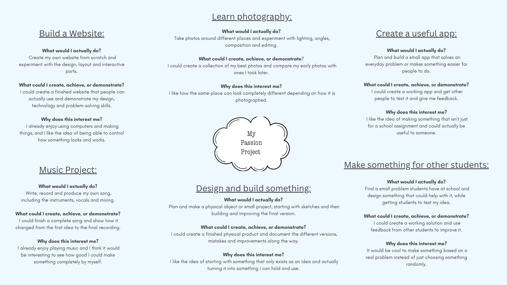
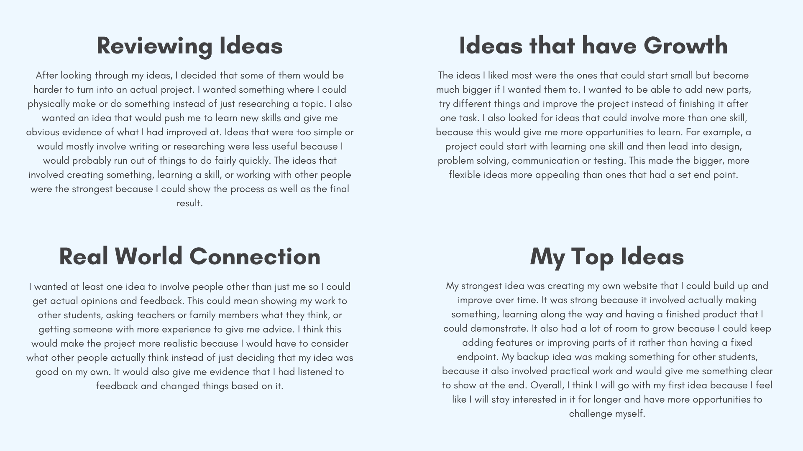
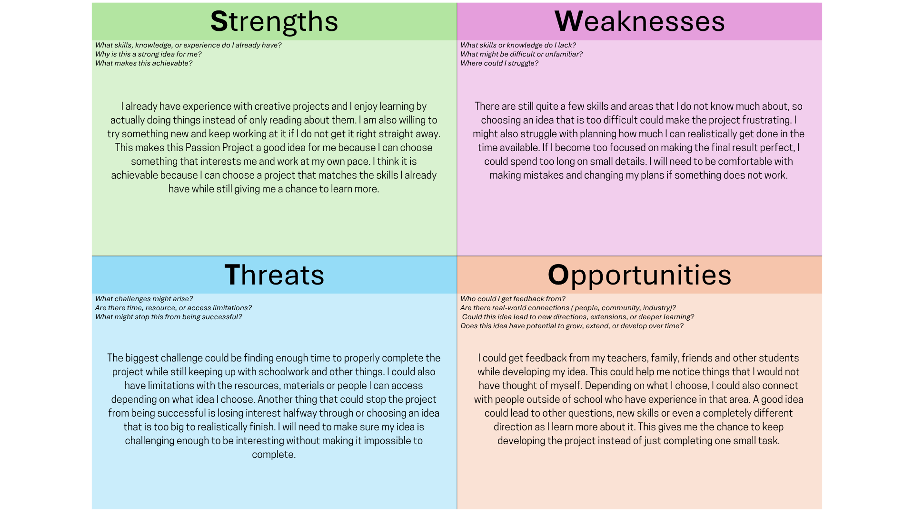
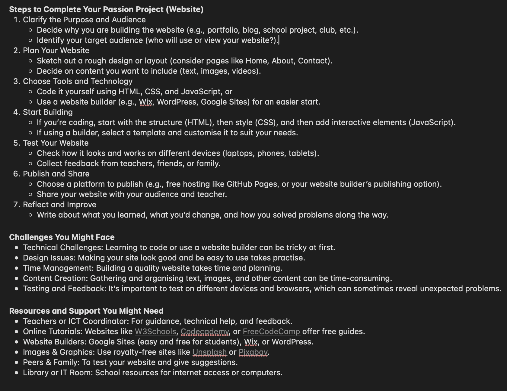

EIF PASSION PROJECT: WYATT
The Project is the Portfolio
Instead of building my project and then writing a separate folio about it, I decided to make my website the main submission so that everything is in the one place. This website is my complete EIF Passion Project and shows the things I have learnt by actually building and testing something myself.
Everything you see here, like the pages, transitions and features, is part of the actual final product. I wanted the site to show both the finished result and the process behind it, rather than just handing in a document full of screenshots.
SITE GUIDE
How to Navigate
- Overview: Explains what the project is and why I decided to present it as a website.
- NEoL: Shows my natural evidence of learning, including my planning work, brainstorming, SWOT, EdChat evaluation and other evidence from the project.
- Journey: Shows the main stages I went through while planning, building, testing and improving the project.
- Features: Breaks down some of the main things I built and explains how they work.
- Feedback: Shows what happened when other people tested the site and how their feedback affected my decisions.
- Code: Contains the source code behind the website and shows how the different parts were put together.
PROOF OF PROCESS
Natural Evidence
I wanted the project to show more than just the final website. The NEoL tab contains the planning evidence from before I started building, while the Journey and Feedback sections help show what happened during the project.
This includes things like my original ideas, planning activities, outside feedback, testing and changes I made along the way. Keeping this evidence in the website means the process is part of the project instead of something seperate from it.
EIF Passion Project - Wyatt
Project Journey
This is the process I followed while building the project. The Journey shows what I was working on at each stage, while the NEoL tab contains the actual evidence and planning documents.
Brainstorming & Planning
Figuring out what I wanted to make, comparing different ideas, and planning what the project could actually become.
What I Worked On
- Came up with different Passion Project ideas and compared them.
- Used a SWOT to look at what could help or get in the way.
- Used EdChat to get another perspective before deciding on an idea.
- I wanted the project to be something I was actually interested in, not just something that was easy to finish.
Evidence
- The brainstorming pages, SWOT and EdChat evaluation are in the NEoL tab.
- The NEoL section shows how the idea changed before I started building it.
Building the Skeleton
Setting up the basic structure first so the project had something to build from before worrying too much about the small details.
What I Worked On
- Set up the main HTML structure and the different sections of the website.
- Built the navigation so the sections could actually be accessed.
- Checked that the main buttons and links were going to the right places.
Evidence
- Early versions and screenshots of the plain website can be shown in the NEoL evidence.
- These show the difference between the original structure and the finished site.
Styling and Design
Turning the basic structure into something that actually looked like the project I had imagined.
What I Worked On
- Chose the colours, spacing, fonts and general layout.
- Added the glass-style cards and different page backgrounds.
- Kept changing the spacing and sizing when parts of the site looked too cramped.
Evidence
- Earlier screenshots can be used to show how the visual design developed.
- The NEoL tab can be used to compare the early version with the more finished one.
Making it Interactive
Adding the parts that made the website feel more like an actual interactive project instead of just a group of static pages.
What I Worked On
- Added the custom cursor and magnetic movement.
- Made the Journey sections open and close when clicked.
- Added the smoother page switching and other small interactions.
- Tested different movement values until the effects didn't feel too fast or distracting.
Evidence
- Screenshots and recordings of things being tested or changed can be added to the NEoL tab.
- The NEoL evidence shows more of the trial and error behind the finished interactions.
Testing and Polish
Going back through the website, finding things that felt wrong, and fixing the smaller problems before calling it finished.
What I Worked On
- Tested the website with other people and paid attention to what they noticed.
- Fixed issues like blurry movement and small layout problems.
- Made sure the different sections and features were working properly.
- Went back over the design and changed things that felt unfinished.
Evidence
- Testing screenshots, notes and feedback are shown in the Feedback and NEoL sections.
- These are useful for showing what changed rather than only showing the final result.
EIF Passion Project - Wyatt
What I Built
These are some of the main things I added to the website. A lot of them started as small ideas, but I kept changing and testing them until they actually felt right.
Cursor
I wanted the cursor to feel like it belonged to the website instead of just using the normal browser one. I made a small dot that follows the mouse and a bigger ring that trails behind it, which gives it a smoother movement.
The ring also reacts when you move over buttons and other interactive parts. It changes size to fit around them, and the element itself moves slightly towards the cursor. I had to test the movement quite a bit because it originally made some text look blurry.
Grid
The Code page has a moving grid in the background that reacts to the mouse. It is made from a lot of points connected together, and when the cursor gets close, the nearby points move away before slowly returning to where they started.
The hardest part was getting the movement to look natural. If the effect was too strong, almost the whole screen moved, so I changed the distance, strength and damping until it stayed subtle enough to sit in the background.
Pages
The website looks like it has separate pages, but everything is actually inside one HTML file. When a tab is clicked, JavaScript hides the current section and shows the new one instead of loading another page.
It also resets the scroll position, changes which navigation item is active and updates the URL. I added smooth page transitions as well so changing sections feels more like moving through one website rather than jumping between screens.
Scrolling
I changed the normal scrolling because I thought the default movement felt a little too basic for the rest of the site. Instead of instantly moving to the new position, the page eases into it.
I also added a small amount of movement when you reach the top or bottom. It is a pretty small detail, but it makes the scrolling feel less abrupt.
Sound
I added short sounds to some of the clicks and interactions around the site. They are made using JavaScript rather than separate audio files, which meant I could control the pitch and length of each sound myself.
I kept the sounds really short and quiet because I wanted them to make the site feel a bit more responsive without becoming annoying every time you click something.
Timeline
The Journey page uses a clickable timeline to show how I built the project. Each stage can be opened to reveal more information, which means the page does not have to show everything at once.
I also made the line running down the side react when a stage is opened. Only one stage stays open at a time, which keeps the whole thing easier to read.
Theme
The Feedback page has a point further down where the colours change when you scroll far enough. The small label at the top changes as well, so the page feels like it is reacting to where you are.
I mainly added this because I wanted there to be something unexpected on the page. It is not necessary for the website to work, but it gives the page a different feel once you reach that point.
Hover
There are a lot of smaller hover effects throughout the website. The cursor reacts to different things, cards move slightly, and some parts of the page have a light effect that follows the mouse.
These were some of the smaller things I enjoyed experimenting with. None of them are needed for the site to function, but together they make it feel more interactive and less like a basic school webpage.
EIF Passion Project - Wyatt
Feedback
Dad · ICT · Xinyi · Chamith · Riley
Getting Someone Else to Use It
I started getting other people to use the website once I had most of the main features working. My dad was one of the first people I showed it to because he had not seen the site while I was making it, so he was useful for getting a completely fresh reaction.
I also had people from ICT and other students, including Xinyi, Chamith and Riley, try different parts of it. I didn't explain every button beforehand because I wanted to see what they would naturally click on and whether the different pages made sense without me standing there telling them what to do.
Trying It Without Knowing How It Was Made
My dad focused more on whether the website actually made sense to use rather than looking at the code. He liked the overall look, but he pointed out that some of the effects are quite different from a normal website and could make someone wonder what they are supposed to do.
That made me think about the difference between making something interesting and making something confusing. I didn't want to remove the interactive parts, becuase they are a big part of the project, so I kept them but made sure the actual navigation and headings were still obvious.
Testing the Code Side
The ICT feedback was more focused on how the website was working behind the scenes. I was asked about why I had put everything into one page and how the different sections were being switched using JavaScript.
Explaining it to someone else made me realise that I actually understood the structure a lot better than I did when I first started. I had to explain what the JavaScript was doing instead of just saying that it made the tabs work, which made me go back through parts of the code and clean up a few things I wasn't completely happy with.
Finding Things I Didn't Notice
Xinyi tested the website without me showing her every part first. One useful thing I noticed was that I already knew what each section was supposed to do, so some things felt obvious to me that weren't necessarily obvious straight away to someone else.
This made me look more closely at the spacing, headings and interactive parts. I kept the more unusual effects, but made sure the important information was still easy to find without needing to know how the site works teh first time.
Testing the Timeline
Chamith spent some time looking through the Journey page and testing the different phases. One thing that came up was the timeline behaviour when moving from one phase to another.
The sections were designed so that only one could stay open at a time. At first I wasn't sure whether that was the best choice, but after looking at how much information each section contains, I decided keeping one open made the page easier to follow and stopped it becoming one huge block of text.
The Cursor
Riley was one of the people who noticed the custom cursor the most. While testing it, I also noticed that some of the text could look slightly blurry when the magnetic effect moved it around.
The cursor itself was still working, so it would have been easy to ignore the problem. Instead I looked into the movement calculation and found that it could produce decimal pixel values. I changed the final movement values so they were rounded to whole pixels, which kept the text looking much sharper while the effect was moving.
What I Changed Because of Testing
Keeping the Timeline Simple
The feedback about the Journey page made me think about whether I was trying to put too much information on the screen at once. I decided to keep the single-open-section system becuase it made the page easier to read, but the testing still helped me understand why that choice mattered.
Fixing the Cursor
The blurry cursor was probably the clearest example of feedback leading to an actual technical change. I found the problem in the movement calculation and used Math.round() on the final values. The effect still feels the same, but the text is much cleaner when it moves.
Making Sure the Effects Don't Get in the Way
Different people reacted differently to the animations and unusual interactions. That was useful because I knew exactly how everything worked, while they didn't. I kept the effects because they are a big part of what makes this project mine, but I made sure the main content and navigation stayed straightforward.
What I Learnt From Other People
The biggest thing I took from the testing was that knowing how something works can make you a bit blind to how it feels for someone else. I knew where everything was because I had built it, so getting other people to use it without explaining everything showed me which parts were actually clear and which parts needed another look.
Natural Evidence of Learning
Part A - Planning
This section shows how I explored different ideas, compared them, and started working out what I wanted my Passion Project to become.
Brainstorming
I started by coming up with a range of different ideas instead of deciding on one straight away. I looked at things I was interested in, things I already enjoyed doing, and skills I could improve. The point was to give myself a few different options before deciding which idea had the most potential.


SWOT
The SWOT would help me look at my ideas more realistically. I would need to think about what I am already good at, what could be difficult, what opportunities the project could give me, and what might get in the way. This should help me work out whether an idea is actually achievable, not just whether it sounds interesting.

EdChat
I would then use EdChat to get another perspective on my strongest ideas. I would not just take whatever it says and follow it exactly. I would look through the response and decide which suggestions actually make sense for me, which ones might need changing, and which ones would not really work in a school project.
Starting with the purpose and audience would make sense. Before I begin building anything, I would need to know what the website is actually for and who I am making it for.
The planning step would be useful because I would need to work out the layout before I start building. I could use my brainstorming ideas to decide what sections I want the website to have.
EdChat suggests using website builders like Wix or Google Sites, but I would rather code the website myself. Using a builder would make the project easier, but it would also take away some of the challenge and learning I want from it.

Testing the website on different devices and getting other people to try it would be really useful. I might think everything works properly, but someone else could notice something I missed.
Time management would probably be one of the biggest challenges. I would need to make sure I leave enough time for testing and fixing problems instead of spending all my time adding new features.
Keeping evidence of my progress would be important because it would give me something to show later. I could save screenshots, testing notes and different versions of the website as I work.
(Haha, I have no idea how to get these arrows positioned properly)
Overall, I think the EdChat response would be useful as a starting point, but I would not follow all of it exactly. The parts about planning, testing, collecting evidence and leaving time to improve would be useful for my project. Some of the suggestions, like using a website builder, would not suit what I want to learn, so I would leave those out.
Final Decision
After comparing my ideas, looking at my SWOT and thinking about the EdChat response, I think building a website would be the strongest option for my Passion Project.
Build a Website
This idea would give me a clear final product while still giving me lots of things to learn. I would be able to work on the design, structure and interactive parts and keep improving them as I go.
Make Something for Other Students
My backup idea would be to create something useful for other students. I like this because I could find a real problem, get opinions from other people and improve my idea based on their feedback.
I think the website would give me the most room to take action, experiment and develop new skills. I could start with the basic idea and keep adding to it as I learn more. It would also give me lots of ways to collect evidence, including my planning, different versions, testing and feedback. Most importantly, it is something I am actually interested in, so I think I would stay motivated to keep working on it.
EIF Passion Project - Wyatt
Passion Project VS Code Files
index.html
<!DOCTYPE html>
<html lang="en">
<head>
<meta charset="UTF-8">
<meta name="viewport" content="width=device-width, initial-scale=1.0">
<title>EIF Archive</title>
<link rel="icon" type="image/svg+xml" href="favicon.svg">
<link rel="stylesheet" href="style.css">
</head>
<body data-view="home">
<div class="noise-overlay"></div>
<div class="dynamic-texture-overlay"></div>
<div class="cursor-dot" id="cursor-dot"></div>
<div class="cursor-ring" id="cursor-ring"></div>
<div class="ambient-glow-layer"></div>
<header class="navbar-container">
<nav class="liquid-clay-nav dynamic-shine" id="main-nav">
<div class="nav-brand magnetic-target">
<span class="nav-logo">EIF<span class="dot">.</span></span>
<span style="font-size: 13px; font-weight: 500; opacity: 0.85; padding-left: 12px; border-left: 1px solid currentColor;">Wyatt</span>
</div>
<div class="nav-links">
<div class="nav-item-wrapper"><a href="#home" class="nav-item active magnetic-target">Home</a><div class="nav-indicator"></div></div>
<div class="nav-item-wrapper"><a href="#about" class="nav-item magnetic-target">Overview</a><div class="nav-indicator"></div></div>
<div class="nav-item-wrapper"><a href="#journey" class="nav-item magnetic-target">Journey</a><div class="nav-indicator"></div></div>
<div class="nav-item-wrapper"><a href="#features" class="nav-item magnetic-target">Features</a><div class="nav-indicator"></div></div>
<div class="nav-item-wrapper"><a href="#blog" class="nav-item magnetic-target">Feedback</a><div class="nav-indicator"></div></div>
<div class="nav-item-wrapper"><a href="#code" class="nav-item magnetic-target">Code</a><div class="nav-indicator"></div></div>
</div>
</nav>
</header>
<main class="view-manager">
</main>
<script src="script.js"></script>
</body>
</html>style.css
margin: 0;
padding: 0;
box-sizing: border-box;
user-select: none;
cursor: none !important;
}
body {
font-family: -apple-system, BlinkMacSystemFont, "Segoe UI", Roboto, sans-serif;
overflow: hidden;
height: 100vh;
width: 100vw;
transition: background 0.5s ease, color 0.5s ease;
cursor: none;
}
.magnetic-target, .nav-item, .nav-trigger, .node-interactive-zone, .clay-glass-card {
backface-visibility: hidden;
transform-style: preserve-3d;
-webkit-font-smoothing: antialiased;
}
::view-transition-old(root),
::view-transition-new(root) {
animation-duration: 0.4s;
animation-timing-function: cubic-bezier(0.25, 1, 0.5, 1);
}
.navbar-container {
view-transition-name: spa-navbar;
}
body[data-view="home"] {
background: #121d1d;
color: #ffffff;
}
body[data-view="home"] .dynamic-texture-overlay {
background-image: radial-gradient(rgba(187, 203, 203, 0.03) 1px, transparent 1px);
background-size: 16px 16px;
}
body[data-view="home"] .liquid-clay-nav {
border-color: rgba(187, 203, 203, 0.15);
background-color: rgba(18, 29, 29, 0.45);
color: #BBCBCB;
}
body[data-view="about"] {
background: radial-gradient(circle at 30% 20%, #94846b 0%, #82735C 100%);
color: #ffffff;
}
body[data-view="about"] .dynamic-texture-overlay {
background-image: linear-gradient(rgba(0, 0, 0, 0.15) 1px, transparent 1px);
background-size: 100% 32px;
}
body[data-view="about"] .human-editorial-card {
background: rgba(0, 0, 0, 0.18);
border-color: rgba(255, 255, 255, 0.1);
backdrop-filter: blur(20px);
}
body[data-view="about"] .liquid-clay-nav { border-color: rgba(255, 255, 255, 0.15); background-color: rgba(0, 0, 0, 0.15); color: #ffffff; }
body[data-view="journey"] {
background: radial-gradient(circle at 50% 80%, #96814d 0%, #806D40 100%);
color: #ffffff;
}
body[data-view="journey"] .dynamic-texture-overlay {
background-image:
linear-gradient(rgba(255, 255, 255, 0.03) 1px, transparent 1px),
linear-gradient(90deg, rgba(255, 255, 255, 0.03) 1px, transparent 1px);
background-size: 40px 40px;
}
body[data-view="journey"] .node-interactive-zone {
background: rgba(0, 0, 0, 0.15);
border-color: rgba(255, 255, 255, 0.08);
}
body[data-view="journey"] .liquid-clay-nav { border-color: rgba(255, 255, 255, 0.15); background-color: rgba(0, 0, 0, 0.15); color: #ffffff; }
body[data-view="features"] {
background: radial-gradient(circle at 50% 50%, #cfdede 0%, #BBCBCB 100%);
color: #1E3231;
}
body[data-view="features"] .dynamic-texture-overlay {
background-image:
radial-gradient(circle, rgba(30, 50, 49, 0.08) 1px, transparent 1px),
linear-gradient(rgba(30, 50, 49, 0.02) 1px, transparent 1px);
background-size: 32px 32px;
}
body[data-view="features"] .clay-glass-card {
background: rgba(255, 255, 255, 0.4);
border-color: rgba(30, 50, 49, 0.15);
color: #1E3231;
}
body[data-view="features"] .clay-glass-card h3 { color: #1E3231; }
body[data-view="features"] .clay-glass-card p { color: #354b4a; }
body[data-view="features"] .section-tagline { color: #1E3231; opacity: 0.7; }
body[data-view="features"] .liquid-clay-nav { border-color: rgba(30, 50, 49, 0.12); background-color: rgba(255, 255, 255, 0.35); color: #1E3231; }
body[data-view="blog"] {
background: #E5FFDE;
color: #1E3231;
}
body[data-view="blog"] .dynamic-texture-overlay {
background: repeating-linear-gradient(
45deg,
transparent,
transparent 10px,
rgba(30, 50, 49, 0.025) 10px,
rgba(30, 50, 49, 0.025) 11px
);
}
body[data-view="blog"] .clay-glass-card {
background: rgba(255, 255, 255, 0.6);
border-color: rgba(30, 50, 49, 0.1);
color: #1E3231;
}
body[data-view="blog"] .log-entry p { color: #2e4443; }
body[data-view="blog"] .section-tagline { color: #806D40; }
body[data-view="blog"] .sage-portal-rect { border-color: rgba(30, 50, 49, 0.2); }
body[data-view="blog"] .liquid-clay-nav { border-color: rgba(30, 50, 49, 0.1); background-color: rgba(255, 255, 255, 0.35); color: #1E3231; }
body[data-blog-theme="shifted"] {
background: #1E3231 !important;
color: #E5FFDE !important;
}
body[data-blog-theme="shifted"] .clay-glass-card {
background: rgba(255, 255, 255, 0.02) !important;
border-color: rgba(225, 255, 222, 0.15) !important;
color: #ffffff !important;
}
body[data-blog-theme="shifted"] .log-entry p { color: #BBCBCB !important; }
body[data-blog-theme="shifted"] .dynamic-texture-overlay {
background: repeating-linear-gradient(
-45deg,
transparent,
transparent 8px,
rgba(229, 255, 222, 0.03) 8px,
rgba(229, 255, 222, 0.03) 9px
) !important;
}
body[data-blog-theme="shifted"] .liquid-clay-nav { border-color: rgba(229, 255, 222, 0.2) !important; background-color: rgba(30, 50, 49, 0.35) !important; color: #E5FFDE !important; }
body[data-view="code"] {
background: #121d1d;
color: #BBCBCB;
}
body[data-view="code"] .dynamic-texture-overlay {
background-image: radial-gradient(rgba(187, 203, 203, 0.02) 1px, transparent 1px);
background-size: 16px 16px;
}
body[data-view="code"] .liquid-clay-nav { border-color: rgba(187, 203, 203, 0.15); background-color: rgba(18, 29, 29, 0.45); color: #BBCBCB; }
.view-manager {
position: relative;
width: 100%;
height: 100%;
z-index: 2;
}
.spa-view {
position: absolute;
top: 0; left: 0; width: 100%; height: 100%;
opacity: 0;
pointer-events: none;
visibility: hidden;
transform: translate3d(0,0,0);
will-change: opacity, visibility;
transition: opacity 0.25s ease, visibility 0.25s ease;
}
.spa-view.active-view {
opacity: 1;
pointer-events: auto;
visibility: visible;
}
.scrollable-view {
overflow-y: auto;
scrollbar-width: none;
will-change: transform;
}
.scrollable-view::-webkit-scrollbar {
display: none;
}
.view-wrapper {
max-width: 1200px;
margin: 0 auto;
padding: 160px 40px 80px 40px;
}
.noise-overlay {
position: fixed;
top: 0; left: 0; width: 100vw; height: 100vh;
background-image: url("data:image/svg+xml,%3Csvg viewBox='0 0 200 200' xmlns='http://www.w3.org/2000/svg'%3E%3Cfilter id='noiseFilter'%3E%3CfeTurbulence type='fractalNoise' baseFrequency='0.95' numOctaves='3' stitchTiles='stitch'/%3E%3C/filter%3E%3Crect width='100%25' height='100%25' filter='url(%23noiseFilter)'/%3E%3C/svg%3E");
opacity: 0.05;
pointer-events: none;
z-index: 9999;
}
.dynamic-texture-overlay {
position: fixed;
top: 0; left: 0; width: 100vw; height: 100vh;
pointer-events: none;
z-index: 1;
transition: background 0.5s ease;
}
.cursor-dot {
width: 6px; height: 6px;
background: currentColor;
border-radius: 50%;
position: fixed;
pointer-events: none;
z-index: 10000;
transform: translate(-50%, -50%);
}
.cursor-ring {
width: 36px; height: 36px;
border: 1px solid rgba(128, 128, 128, 0.35);
border-radius: 50%;
position: fixed;
top: 0; left: 0;
pointer-events: none;
z-index: 9999;
transform: translate3d(0, 0, 0);
transition: width 0.22s cubic-bezier(0.16, 1, 0.3, 1),
height 0.22s cubic-bezier(0.16, 1, 0.3, 1),
border-radius 0.22s cubic-bezier(0.16, 1, 0.3, 1),
background-color 0.22s cubic-bezier(0.16, 1, 0.3, 1),
border-color 0.22s cubic-bezier(0.16, 1, 0.3, 1);
}
.cursor-ring.hovering {
border-color: rgba(128, 128, 128, 0.6);
background-color: rgba(128, 128, 128, 0.05);
}
.ambient-glow-layer {
position: fixed;
top: 0; left: 0; width: 100vw; height: 100vh;
background: radial-gradient(circle at 50% 50%, rgba(255,255,255,0.01) 0%, transparent 80%);
pointer-events: none;
z-index: 1;
}
.scroll-arrow-icon {
display: inline-block;
transition: transform 0.5s cubic-bezier(0.16, 1, 0.3, 1);
will-change: transform;
}
.navbar-container {
position: fixed;
top: 30px;
left: 50%;
transform: translateX(-50%);
z-index: 5000;
width: calc(100% - 80px);
max-width: 1120px;
}
.liquid-clay-nav {
display: flex;
justify-content: space-between;
align-items: center;
padding: 10px 24px;
border-radius: 100px;
backdrop-filter: blur(20px);
-webkit-backdrop-filter: blur(20px);
color: currentColor;
border: 1px solid transparent;
transition: border-color 0.4s ease, background-color 0.4s ease, color 0.4s ease;
}
.nav-brand {
display: flex;
align-items: center;
gap: 15px;
font-weight: 700;
}
.nav-logo .dot { color: #806D40; }
.ambient-tracker {
font-size: 11px;
text-transform: uppercase;
letter-spacing: 2px;
opacity: 0.7;
border-left: 1px solid currentColor;
padding-left: 15px;
}
.nav-links {
display: flex;
gap: 8px;
}
.nav-item-wrapper { position: relative; }
.nav-item {
color: currentColor;
opacity: 0.5;
text-decoration: none;
font-size: 13px;
padding: 8px 16px;
display: block;
border-radius: 20px;
transition: opacity 0.3s ease;
}
.nav-item.active, .nav-item:hover { opacity: 1; }
.hero-intro {
display: flex;
flex-direction: column;
justify-content: center;
min-height: calc(100vh - 240px);
}
.section-tagline {
font-size: 12px;
text-transform: uppercase;
letter-spacing: 3px;
color: #806D40;
margin-bottom: 20px;
}
.hero-title {
font-size: 64px;
font-weight: 400;
line-height: 1.1;
letter-spacing: -2px;
max-width: 800px;
margin-bottom: 30px;
}
.hero-description {
font-size: 20px;
line-height: 1.5;
color: #BBCBCB;
max-width: 600px;
margin-bottom: 40px;
}
.hero-actions {
display: flex;
gap: 15px;
}
.action-btn-primary {
background: #ffffff;
color: #1E3231;
padding: 14px 28px;
border-radius: 30px;
text-decoration: none;
font-size: 14px;
font-weight: 500;
}
.action-btn-secondary {
border: 1px solid rgba(255,255,255,0.2);
color: #ffffff;
padding: 14px 28px;
border-radius: 30px;
text-decoration: none;
font-size: 14px;
font-weight: 500;
}
.editorial-split {
display: grid;
grid-template-columns: 1fr 1fr;
gap: 80px;
align-items: start;
}
.human-editorial-card {
padding: 40px;
border-radius: 24px;
backdrop-filter: blur(20px);
margin-bottom: 30px;
}
.offset-card { margin-left: 40px; opacity: 0.85; }
.view-text { font-size: 20px; line-height: 1.6; }
.view-text-small { font-size: 15px; line-height: 1.6; margin-top: 15px; }
.timeline-layout { max-width: 900px; }
.timeline-header { margin-bottom: 60px; }
.timeline-container { position: relative; padding-left: 40px; }
.timeline-container::before {
content: '';
position: absolute;
left: 19px; top: 0; width: 2px; height: 100%;
background: rgba(255, 255, 255, 0.1);
}
.timeline-track-fill {
position: absolute;
left: 19px; top: 0; width: 2px; height: 0%;
background: #E5FFDE;
transition: height 1.4s cubic-bezier(0.16, 1, 0.3, 1);
}
.timeline-node { position: relative; margin-bottom: 24px; }
.node-interactive-zone {
display: flex;
align-items: center;
justify-content: space-between;
border: 1px solid transparent;
padding: 24px 32px;
border-radius: 20px;
cursor: pointer;
transition: background 0.3s ease, border-color 0.3s ease;
}
.node-marker-wrapper {
position: absolute;
left: -40px; width: 40px;
display: flex; justify-content: center; align-items: center;
}
.node-marker {
width: 10px; height: 10px;
border-radius: 50%;
background: #806D40;
border: 2px solid #ffffff;
transition: background 0.3s ease, transform 0.3s ease;
z-index: 5;
}
.timeline-node.node-expanded .node-marker {
background: #E5FFDE;
transform: scale(1.2);
}
.node-content { max-width: 80%; }
.node-phase { font-size: 11px; text-transform: uppercase; letter-spacing: 1.5px; color: #E5FFDE; display: block; margin-bottom: 6px; }
.node-content h3 { font-size: 20px; font-weight: 500; margin-bottom: 4px; }
.node-content p { font-size: 14px; opacity: 0.8; line-height: 1.4; }
.node-toggle-icon {
font-size: 18px;
display: inline-block;
transition: transform 0.8s cubic-bezier(0.16, 1, 0.3, 1);
will-change: transform;
}
.timeline-node.node-expanded .node-toggle-icon {
transform: rotate(765deg);
}
.node-drawer {
max-height: 0;
overflow: hidden;
transition: max-height 1.4s cubic-bezier(0.16, 1, 0.3, 1);
}
.timeline-node.node-expanded .node-drawer { max-height: 600px; }
.drawer-inner {
padding: 20px 32px 32px 32px;
background: rgba(0, 0, 0, 0.05);
border-bottom-left-radius: 20px;
border-bottom-right-radius: 20px;
}
.drawer-matrix {
display: grid;
grid-template-columns: 1.2fr 1fr;
gap: 40px;
border-top: 1px solid rgba(255, 255, 255, 0.1);
padding-top: 24px;
}
.matrix-block h4 { font-size: 12px; text-transform: uppercase; letter-spacing: 2px; margin-bottom: 12px; }
.drawer-list { list-style: none; }
.drawer-list li { font-size: 13.5px; margin-bottom: 8px; line-height: 1.5; position: relative; padding-left: 14px; opacity: 0.9; }
.drawer-list li::before { content: '■'; position: absolute; left: 0; top: 1px; font-size: 8px; color: #E5FFDE; }
.asset-tags { display: flex; gap: 8px; margin-bottom: 16px; flex-wrap: wrap; }
.tag { font-size: 11px; padding: 4px 10px; background: rgba(0,0,0,0.2); border: 1px solid rgba(255,255,255,0.1); border-radius: 6px; }
.status-indicator { font-size: 12px; opacity: 0.8; }
.status-val-complete { color: #E5FFDE; font-weight: 600; }
.status-val-active { color: #E5FFDE; font-weight: 600; }
.features-asymmetric-grid {
display: grid;
grid-template-columns: 1.3fr 1fr;
gap: 24px;
margin-top: 40px;
}
.clay-glass-card {
border-radius: 24px;
padding: 40px;
transition: transform 0.3s ease, background 0.3s ease;
}
.feature-box h3 { font-size: 22px; font-weight: 500; margin-bottom: 15px; }
.feature-box p { font-size: 15px; line-height: 1.6; }
.tall-box { grid-row: span 2; display: flex; flex-direction: column; justify-content: center; }
.editorial-layout { display: grid; grid-template-columns: 1fr 1.5fr; gap: 60px; }
.sidebar-meta { font-size: 14px; line-height: 1.6; margin-top: 20px; opacity: 0.8; }
.log-entry { margin-bottom: 24px; }
.entry-date { font-size: 11px; text-transform: uppercase; letter-spacing: 2px; display: block; margin-bottom: 12px; font-weight: 600; }
.log-entry h3 { font-size: 24px; margin-bottom: 12px; font-weight: 500; }
.color-shift-anchor { padding: 60px 0; display: flex; justify-content: center; }
.sage-portal-rect {
display: flex;
align-items: center;
gap: 20px;
border-top: 1px dashed rgba(0,0,0,0.15);
border-bottom: 1px dashed rgba(0,0,0,0.15);
padding: 20px 40px;
width: 100%;
justify-content: space-between;
}
.portal-label { font-size: 12px; text-transform: uppercase; letter-spacing: 3px; }
.scroll-pad { height: 300px; }
#code { position: relative; }
#mesh-canvas { position: absolute; top: 0; left: 0; width: 100%; height: 100%; pointer-events: none; z-index: 1; }
#code .library-layout { position: relative; z-index: 2; }
.library-shelf { display: flex; flex-direction: column; gap: 16px; margin-top: 40px; }
.shelf-item {
display: flex;
justify-content: space-between;
align-items: center;
padding: 24px 32px;
border-radius: 16px;
cursor: pointer;
background: rgba(255, 255, 255, 0.02);
border: 1px solid rgba(255, 255, 255, 0.06);
transition: background 0.3s ease, border-color 0.3s ease, transform 0.3s ease !important;
}
.shelf-item:hover {
background: rgba(255, 255, 255, 0.06) !important;
border-color: rgba(229, 255, 222, 0.25) !important;
transform: translateY(-4px) scale(1.015) !important;
}
.shelf-item span { font-size: 11px; text-transform: uppercase; letter-spacing: 2px; color: #806D40; }
.shelf-item strong { font-size: 16px; font-weight: 400; color: #ffffff; }
script.js
document.addEventListener('DOMContentLoaded', () => {
const navItems = document.querySelectorAll('.nav-item');
const actionTriggers = document.querySelectorAll('.nav-trigger');
const sections = document.querySelectorAll('.spa-view');
const spaceTag = document.getElementById('space-tag');
const cursorDot = document.getElementById('cursor-dot');
const cursorRing = document.getElementById('cursor-ring');
let mouse = { x: window.innerWidth/2, y: window.innerHeight/2 };
let ring = { x: window.innerWidth/2, y: window.innerHeight/2 };
let snapTarget = null;
let ringWidth = 36;
let ringHeight = 36;
window.addEventListener('mousemove', (e) => {
mouse.x = e.clientX;
mouse.y = e.clientY;
if (cursorDot) {
cursorDot.style.transform = `translate3d(calc(${mouse.x}px - 50%), calc(${mouse.y}px - 50%), 0)`;
}
});
function animateCursor() {
if (snapTarget) {
const rect = snapTarget.getBoundingClientRect();
const targetX = rect.left + rect.width / 2;
const targetY = rect.top + rect.height / 2;
ring.x += (targetX - ring.x) * 0.28;
ring.y += (targetY - ring.y) * 0.28;
ringWidth = rect.width + 16;
ringHeight = rect.height + 10;
} else {
ring.x += (mouse.x - ring.x) * 0.15;
ring.y += (mouse.y - ring.y) * 0.15;
ringWidth = 36;
ringHeight = 36;
}
if (cursorRing) {
cursorRing.style.width = `${ringWidth}px`;
cursorRing.style.height = `${ringHeight}px`;
cursorRing.style.transform = `translate3d(calc(${ring.x}px - 50%), calc(${ring.y}px - 50%), 0)`;
}
requestAnimationFrame(animateCursor);
}
requestAnimationFrame(animateCursor);
function applyMagneticBehaviors() {
const magneticTargets = document.querySelectorAll('.magnetic-target');
magneticTargets.forEach(target => {
target.removeEventListener('mouseenter', onTargetEnter);
target.removeEventListener('mouseleave', onTargetLeave);
target.removeEventListener('mousemove', onTargetMove);
target.addEventListener('mouseenter', onTargetEnter);
target.addEventListener('mouseleave', onTargetLeave);
target.addEventListener('mousemove', onTargetMove);
});
}
function onTargetEnter(e) {
if (cursorRing) {
cursorRing.classList.add('hovering');
snapTarget = e.currentTarget;
const targetRadius = window.getComputedStyle(snapTarget).borderRadius;
cursorRing.style.borderRadius = targetRadius || '8px';
}
}
function onTargetLeave(e) {
if (cursorRing) {
cursorRing.classList.remove('hovering');
snapTarget = null;
cursorRing.style.borderRadius = '50%';
}
e.currentTarget.style.transform = '';
}
function onTargetMove(e) {
if (!snapTarget) return;
const rect = e.currentTarget.getBoundingClientRect();
const x = e.clientX - rect.left - rect.width / 2;
const y = e.clientY - rect.top - rect.height / 2;
// Fixed sub-pixel rendering blur by rounding to whole pixels
const moveX = Math.round(x * 0.15);
const moveY = Math.round(y * 0.15);
e.currentTarget.style.transform = `translate3d(${moveX}px, ${moveY}px, 0)`;
}
let scrollTarget = 0;
let scrollCurrent = 0;
let isScrolling = false;
window.addEventListener('wheel', (e) => {
const activeView = document.querySelector('.spa-view.active-view.scrollable-view');
if (!activeView) return;
e.preventDefault();
const arrowIcons = document.querySelectorAll('.scroll-arrow-icon');
arrowIcons.forEach(arrow => {
if (e.deltaY > 0) {
arrow.style.transform = 'rotate(0deg)';
} else if (e.deltaY < 0) {
arrow.style.transform = 'rotate(180deg)';
}
});
const maxScroll = activeView.scrollHeight - activeView.clientHeight;
scrollTarget += e.deltaY * 0.8;
scrollTarget = Math.max(-75, Math.min(scrollTarget, maxScroll + 75));
if (!isScrolling) {
isScrolling = true;
requestAnimationFrame(() => smoothScrollLoop(activeView));
}
}, { passive: false });
function smoothScrollLoop(activeView) {
const maxScroll = activeView.scrollHeight - activeView.clientHeight;
const isOverscrolled = scrollCurrent < 0 || scrollCurrent > maxScroll;
let friction = 0.08;
if (isOverscrolled) {
friction = 0.24;
const boundedTarget = Math.max(0, Math.min(scrollTarget, maxScroll));
scrollTarget += (boundedTarget - scrollTarget) * 0.35;
}
scrollCurrent += (scrollTarget - scrollCurrent) * friction;
activeView.scrollTop = Math.max(0, Math.min(scrollCurrent, maxScroll));
if (scrollCurrent < 0) {
activeView.style.transform = `translate3d(0, ${-scrollCurrent * 0.4}px, 0)`;
} else if (scrollCurrent > maxScroll) {
activeView.style.transform = `translate3d(0, ${(maxScroll - scrollCurrent) * 0.4}px, 0)`;
} else {
activeView.style.transform = 'translate3d(0, 0, 0)';
}
if (scrollCurrent <= 4 && scrollTarget <= 0) {
const arrowIcons = document.querySelectorAll('.scroll-arrow-icon');
arrowIcons.forEach(arrow => { arrow.style.transform = 'rotate(0deg)'; });
}
if (activeView.id === 'blog') {
checkBlogPortalThreshold();
}
const distanceToTarget = Math.abs(scrollTarget - scrollCurrent);
if (distanceToTarget > 0.1 || isOverscrolled) {
requestAnimationFrame(() => smoothScrollLoop(activeView));
} else {
scrollCurrent = Math.max(0, Math.min(scrollCurrent, maxScroll));
scrollTarget = scrollCurrent;
activeView.style.transform = 'translate3d(0, 0, 0)';
isScrolling = false;
}
}
const AudioContext = window.AudioContext || window.webkitAudioContext;
let audioCtx = null;
let masterGainNode = null;
function initCentralAudioMixer() {
if (audioCtx) return;
try {
audioCtx = new AudioContext();
masterGainNode = audioCtx.createGain();
masterGainNode.connect(audioCtx.destination);
masterGainNode.gain.setValueAtTime(0.35, audioCtx.currentTime);
} catch (e) {
console.warn('Central audio environment failed initialization:', e);
}
}
function playDesktopClickHaptic(type = 'light') {
initCentralAudioMixer();
if (!audioCtx) return;
try {
if (audioCtx.state === 'suspended') audioCtx.resume();
const osc = audioCtx.createOscillator();
const localGainNode = audioCtx.createGain();
osc.connect(localGainNode);
localGainNode.connect(masterGainNode);
const now = audioCtx.currentTime;
if (type === 'light') {
osc.type = 'sine';
osc.frequency.setValueAtTime(1100, now);
osc.frequency.exponentialRampToValueAtTime(350, now + 0.012);
localGainNode.gain.setValueAtTime(0.08, now);
localGainNode.gain.exponentialRampToValueAtTime(0.001, now + 0.012);
osc.start(now);
osc.stop(now + 0.012);
} else if (type === 'medium') {
osc.type = 'triangle';
osc.frequency.setValueAtTime(750, now);
osc.frequency.exponentialRampToValueAtTime(180, now + 0.025);
localGainNode.gain.setValueAtTime(0.12, now);
localGainNode.gain.exponentialRampToValueAtTime(0.001, now + 0.025);
osc.start(now);
osc.stop(now + 0.025);
} else if (type === 'heavy') {
osc.type = 'sine';
osc.frequency.setValueAtTime(140, now);
osc.frequency.exponentialRampToValueAtTime(45, now + 0.045);
localGainNode.gain.setValueAtTime(0.35, now);
localGainNode.gain.exponentialRampToValueAtTime(0.001, now + 0.045);
osc.start(now);
osc.stop(now + 0.045);
}
} catch (e) {
console.log('Haptic track skipped:', e);
}
}
let canvas = null;
let ctx = null;
let points = [];
let meshAnimationId = null;
let resizeDebounceTimeout = null;
const spacing = 45;
function initMeshEngine() {
canvas = document.getElementById('mesh-canvas');
if (!canvas) return;
ctx = canvas.getContext('2d');
resizeMeshCanvas();
window.removeEventListener('resize', debouncedResizeHandler);
window.addEventListener('resize', debouncedResizeHandler);
window.addEventListener('mousemove', handleMeshInteraction);
if (meshAnimationId) cancelAnimationFrame(meshAnimationId);
animateMesh();
}
function debouncedResizeHandler() {
if (resizeDebounceTimeout) cancelAnimationFrame(resizeDebounceTimeout);
resizeDebounceTimeout = requestAnimationFrame(() => {
resizeMeshCanvas();
});
}
function resizeMeshCanvas() {
if (!canvas) return;
const parent = canvas.parentElement;
canvas.width = parent.clientWidth;
canvas.height = parent.clientHeight;
points = [];
const cols = Math.ceil(canvas.width / spacing) + 1;
const rows = Math.ceil(canvas.height / spacing) + 1;
for (let y = 0; y < rows; y++) {
for (let x = 0; x < cols; x++) {
points.push({
baseX: x * spacing,
baseY: y * spacing,
x: x * spacing,
y: y * spacing,
vx: 0,
vy: 0
});
}
}
}
function handleMeshInteraction(e) {
if (!canvas || document.body.getAttribute('data-view') !== 'code') return;
const rect = canvas.getBoundingClientRect();
const mX = e.clientX - rect.left;
const mY = e.clientY - rect.top;
points.forEach(p => {
const dx = mX - p.x;
const dy = mY - p.y;
const dist = Math.sqrt(dx * dx + dy * dy);
const forceRadius = 130;
if (dist < forceRadius) {
const force = (forceRadius - dist) / forceRadius;
const angle = Math.atan2(dy, dx);
p.vx -= Math.cos(angle) * force * 4;
p.vy -= Math.sin(angle) * force * 4;
}
});
}
function animateMesh() {
if (document.body.getAttribute('data-view') !== 'code') return;
ctx.clearRect(0, 0, canvas.width, canvas.height);
const cols = Math.ceil(canvas.width / spacing) + 1;
points.forEach(p => {
const springK = 0.07;
const damping = 0.82;
const ax = (p.baseX - p.x) * springK;
const ay = (p.baseY - p.y) * springK;
p.vx = (p.vx + ax) * damping;
p.vy = (p.vy + ay) * damping;
p.x += p.vx;
p.y += p.vy;
});
ctx.strokeStyle = 'rgba(229, 255, 222, 0.05)';
ctx.lineWidth = 1;
const rows = Math.ceil(canvas.height / spacing) + 1;
for (let y = 0; y < rows; y++) {
for (let x = 0; x < cols; x++) {
const index = y * cols + x;
if (index >= points.length) continue;
const p = points[index];
if (x < cols - 1 && (index + 1) < points.length) {
const rightP = points[index + 1];
ctx.beginPath();
ctx.moveTo(p.x, p.y);
ctx.lineTo(rightP.x, rightP.y);
ctx.stroke();
}
if (y < rows - 1 && (index + cols) < points.length) {
const downP = points[index + cols];
ctx.beginPath();
ctx.moveTo(p.x, p.y);
ctx.lineTo(downP.x, downP.y);
ctx.stroke();
}
}
}
meshAnimationId = requestAnimationFrame(animateMesh);
}
function switchView(targetId, updateHistory = true) {
const activeSection = document.querySelector(targetId);
if (!activeSection) return;
const executeViewSwapOps = () => {
const viewName = targetId.replace('#', '');
document.body.setAttribute('data-view', viewName);
document.body.setAttribute('data-blog-theme', 'default');
snapTarget = null;
if (spaceTag) {
if (viewName === 'blog') spaceTag.textContent = "Journal System";
else if (viewName === 'journey') spaceTag.textContent = "Chronicle Track";
else if (viewName === 'features') spaceTag.textContent = "Grid Matrix";
else spaceTag.textContent = "Studio Archive";
}
sections.forEach(section => {
section.classList.remove('active-view');
section.style.transform = 'translate3d(0, 0, 0)';
section.scrollTop = 0;
});
scrollTarget = 0;
scrollCurrent = 0;
activeSection.classList.add('active-view');
const arrowIcons = document.querySelectorAll('.scroll-arrow-icon');
arrowIcons.forEach(arrow => { arrow.style.transform = 'rotate(0deg)'; });
if (meshAnimationId) cancelAnimationFrame(meshAnimationId);
if (viewName === 'journey') initTimelineMechanics();
// Changed trigger to code so canvas plays on the right page
if (viewName === 'code') {
setTimeout(initMeshEngine, 30);
}
applyMagneticBehaviors();
navItems.forEach(item => {
item.classList.remove('active');
if (item.getAttribute('href') === targetId) item.classList.add('active');
});
if (updateHistory) history.pushState({ targetId }, '', targetId);
};
if (document.startViewTransition) {
document.startViewTransition(() => {
executeViewSwapOps();
});
} else {
executeViewSwapOps();
}
}
navItems.forEach(item => {
item.addEventListener('mousedown', () => playDesktopClickHaptic('light'));
item.addEventListener('click', (e) => {
e.preventDefault();
switchView(item.getAttribute('href'));
});
});
actionTriggers.forEach(btn => {
btn.addEventListener('mousedown', () => playDesktopClickHaptic('medium'));
btn.addEventListener('click', (e) => {
e.preventDefault();
switchView(btn.getAttribute('href'));
});
});
window.addEventListener('popstate', (e) => {
if (e.state && e.state.targetId) switchView(e.state.targetId, false);
else if (window.location.hash) switchView(window.location.hash, false);
});
function initTimelineMechanics() {
const activeJourneyView = document.getElementById('journey');
if (!activeJourneyView) return;
const nodes = activeJourneyView.querySelectorAll('.timeline-node');
const liquidTrack = activeJourneyView.querySelector('#liquid-track');
if (!nodes.length || !liquidTrack) return;
function updateTrackFill() {
const expandedNodes = activeJourneyView.querySelectorAll('.timeline-node.node-expanded');
if (expandedNodes.length === 0) {
liquidTrack.style.height = '0%';
return;
}
let highestPhase = 0;
expandedNodes.forEach(node => {
const phaseNum = parseInt(node.getAttribute('data-phase'), 10);
if (phaseNum > highestPhase) highestPhase = phaseNum;
});
const totalNodes = nodes.length;
const targetPercent = (highestPhase / totalNodes) * 100 - (100 / totalNodes / 2);
liquidTrack.style.height = `${Math.max(20, targetPercent)}%`;
}
nodes.forEach(node => {
const interactiveZone = node.querySelector('.node-interactive-zone');
if (!interactiveZone || interactiveZone.getAttribute('data-bound') === 'true') return;
interactiveZone.setAttribute('data-bound', 'true');
interactiveZone.addEventListener('mousedown', () => {
const isCurrentlyExpanded = node.classList.contains('node-expanded');
if (!isCurrentlyExpanded) playDesktopClickHaptic('heavy');
else playDesktopClickHaptic('light');
});
interactiveZone.addEventListener('click', (e) => {
e.stopPropagation();
const isCurrentlyExpanded = node.classList.contains('node-expanded');
nodes.forEach(otherNode => otherNode.classList.remove('node-expanded'));
if (!isCurrentlyExpanded) {
node.classList.add('node-expanded');
}
updateTrackFill();
});
});
}
const blogView = document.getElementById('blog');
const portalTrigger = document.getElementById('portal-trigger');
const portalText = document.getElementById('portal-text');
let colorThresholdTripped = false;
function checkBlogPortalThreshold() {
if (!blogView || !portalTrigger) return;
const blogRect = blogView.getBoundingClientRect();
const portalRect = portalTrigger.getBoundingClientRect();
const relativeTop = portalRect.top - blogRect.top;
if (relativeTop <= blogView.clientHeight * 0.4) {
if (!colorThresholdTripped) {
playDesktopClickHaptic('medium');
colorThresholdTripped = true;
}
document.body.setAttribute('data-blog-theme', 'shifted');
if (spaceTag) spaceTag.textContent = "Inverse Feed";
if (portalText) portalText.textContent = "Active Threshold";
} else {
if (colorThresholdTripped) {
playDesktopClickHaptic('light');
colorThresholdTripped = false;
}
document.body.setAttribute('data-blog-theme', 'default');
if (spaceTag) spaceTag.textContent = "Journal System";
if (portalText) portalText.textContent = "Crossing system threshold";
}
}
document.body.addEventListener('mousemove', (e) => {
const target = e.target.closest('.dynamic-shine');
if (target) {
const rect = target.getBoundingClientRect();
const x = e.clientX - rect.left;
const y = e.clientY - rect.top;
target.style.backgroundImage = `radial-gradient(circle 280px at ${x}px ${y}px, rgba(255, 255, 255, 0.08), transparent 100%)`;
}
});
document.body.addEventListener('mouseout', (e) => {
const target = e.target.closest('.dynamic-shine');
if (target) target.style.backgroundImage = 'none';
});
const liquidNav = document.getElementById('main-nav');
if (liquidNav) {
liquidNav.addEventListener('mousemove', (e) => {
const rect = liquidNav.getBoundingClientRect();
const x = e.clientX - rect.left;
const y = e.clientY - rect.top;
liquidNav.style.backgroundImage = `radial-gradient(circle 150px at ${x}px ${y}px, rgba(255, 255, 255, 0.07), rgba(255, 255, 255, 0.01) 60%, transparent 100%)`;
});
liquidNav.addEventListener('mouseleave', () => { liquidNav.style.backgroundImage = 'none'; });
}
const initialHash = window.location.hash || '#home';
switchView(initialHash, true);
});
Code not fully updated from the final changes at the end because adding more lines to this display would've crashed it.